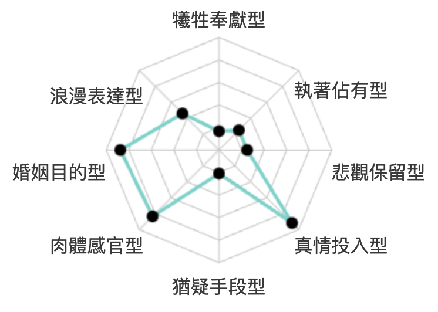

愛情風格報告
愛情風格泛指對愛情的態度、情緒、感覺與行為表現，心理學家將愛情風格分為八種類型，每個人都會同時存在不同的愛情風格，但是會有主要次要之分，下面的八角雷達圖中，分數最高的二個，就是你愛情風格：

主要的愛情風格：真情投入型
對你而言，愛情是一座堅固的堡壘，可以帶著你們克服萬難，度過每一次的風風雨雨，你們相信愛情是可以持久而不退色的，即使在激情過後，你們依舊能夠將這段情感維持下去。你很重視一段感情當中的平等關係，能夠彼此相互分享與包容，對你而言，一段關係要走得夠久，能夠互信互諒是這段感情中不可或缺的元素。你也總是在感情當中真誠的投入一切，通常不會有所保留，因為你相信唯有真誠的投入，才能換回真實的情感，即便你在愛情裡受過傷，你通常還是會選擇相信愛情，因為你所付出的一切，也將影響這段感情發展的歷程。整體而言，你能夠安心自在的談戀愛，也能夠在愛情當中付出你的真心，而你的付出也讓愛情變得更加堅強而穩固，因此真誠投入型的人，往往能夠獲得一段幸福美滿的關係。
給你的建議
許多人的愛情模式都屬於真誠投入型，這其實是一個很好的愛情互動模式，在這樣的模式之下，只要你肯多多為對方著想，那麼你就能夠獲得一段美好的愛情。對屬於這種類型的人來說，一段愛情能否成功，其實關鍵因素在於雙方能否有良好的溝通，「你付出的方式，真的是對方想要的嗎？」，找到適合彼此的付出方式，將讓你們付出的心力如實的傳達到彼此的心中。除此之外，對於感情的認真付出，有時候也該適可而止，畢竟對方並不一定如你一般看重這段感情，有可能只是玩玩而已，如果不懂得適度保護自己，一味的付出將讓你在感情結束時更加萬念俱灰。
次要的愛情風格：婚姻目的型
對於你而言，結婚是你談戀愛的最終目的，因此在愛情關係當中，你會謹慎考量你和你的對象之間，是否適合長久的生活在一起，而不是關係中是否充滿了激情。對你而言，與其選擇一段轟轟烈烈的愛情，你更在乎這段感情能否細水長流，你的交往目的會以未來的需要及現實的條件做為主要考量，在選擇伴侶上，你比較會謹慎考慮，會以這段關係是否適合走向婚姻作為考量；若是這段感情出現了裂痕，你也較容易選擇努力修補裂縫，而不是輕易放棄。總結而言，你在感情上較為理性，與其選擇有激情但較不適合的愛情，你更傾向於選擇合適但平淡的感情，伴侶關係能否夠穩定長久是你擇偶上最重要的考量因素。
給你的建議
你通常會有較長的交往時間，也比較不會輕易地放棄一段感情，但是，一段婚姻能否順利的條件，大多奠定在親密、承諾和彼此的了解之上。因此，在還沒有到達這個階段之前，多多觀察你身邊可能的對象，以及擴大生活圈，會是投資自己較好的方式。換一個角度來說，你選擇了某一段感情，通常都是以結婚為最終目的，彷彿只要走進了婚姻，愛情就會完美，若是沒能到達這個目標，那麼這段感情就是失敗的；但若帶著這樣的想法來尋找愛情對向，往往沒辦法讓你專注於此時此刻愛情的進展，也許會過於害怕彼此尚未磨合的地方，使得完滿婚姻這個目標變得遙遙無期，建議先以平常心為出發點，多和身邊的人互動，專注在每個當下能夠努力的事情，會讓這段愛情更容易成功。
婚姻價值
成長觀
你認為成功的人際關係或團隊合作需要經營與發展，遇到挑戰時，你更傾向於透過努力來解決問題，而非將其歸因於先天因素或運氣。在面對困難時，你會選擇尋找方法來適應與調整，而不是消極地接受現狀。
婚姻成長觀
非成長觀成長觀
婚姻傳統性
在價值觀上，你更傾向於平等與相互尊重，認為個體的幸福與選擇應優先於傳統規範。你重視個人與群體之間的平衡，希望在關係或合作中找到合適的相處方式，而非單方面迎合社會或文化的期待。
婚姻傳統性
現代型傳統型